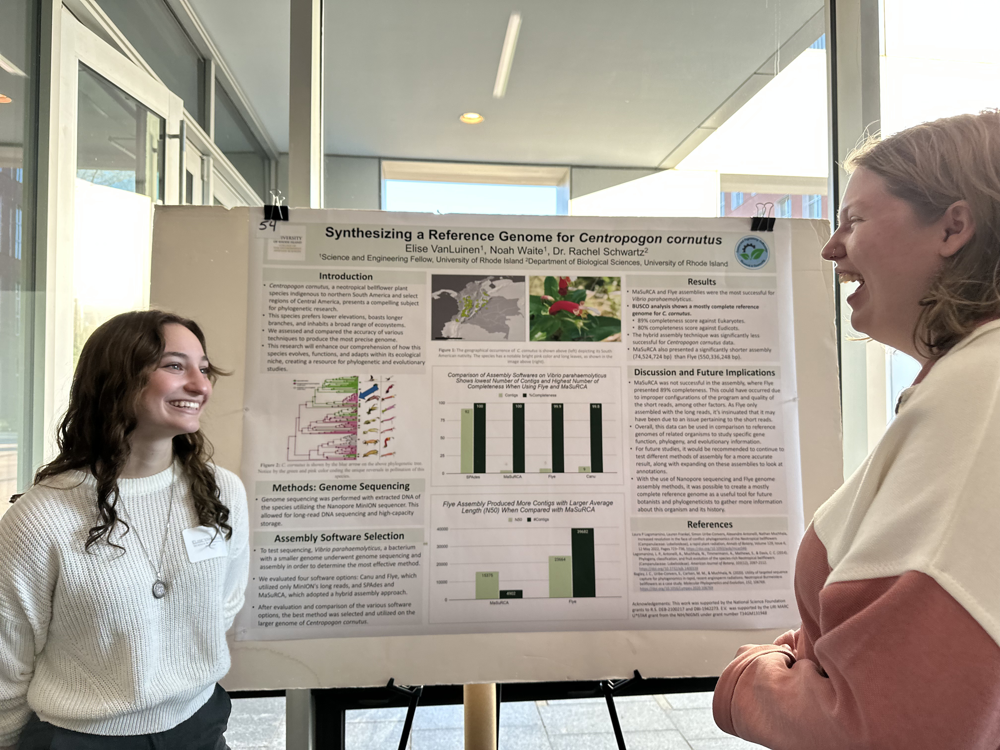
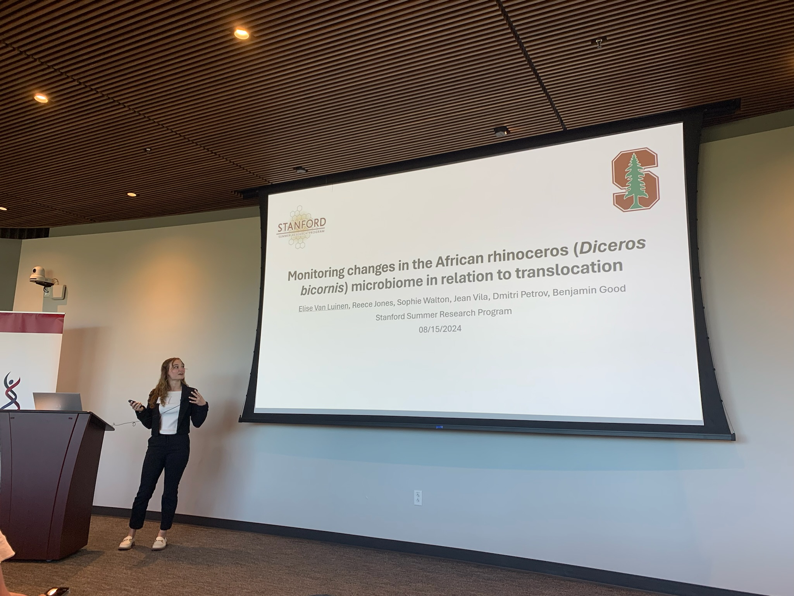
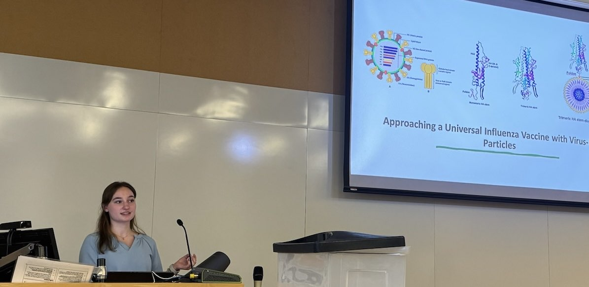
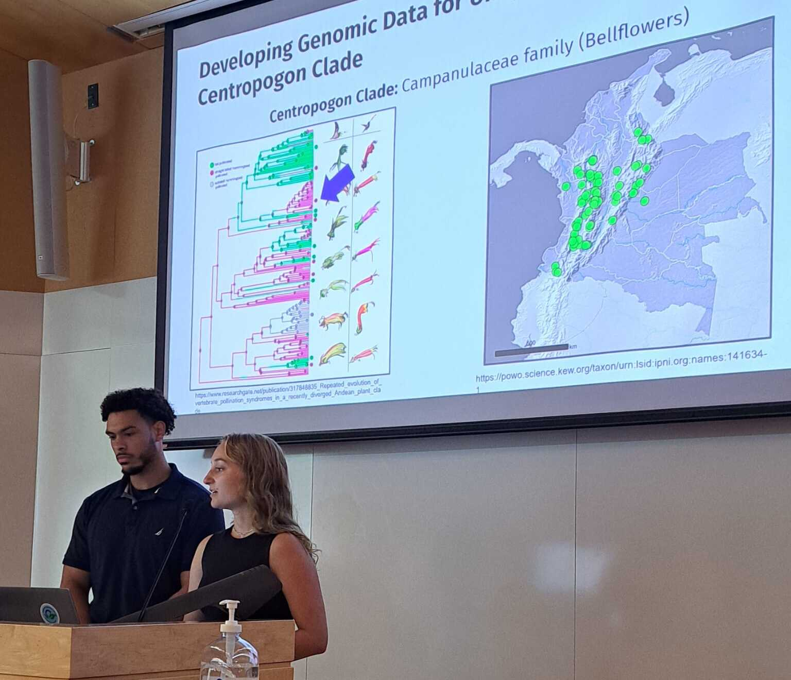
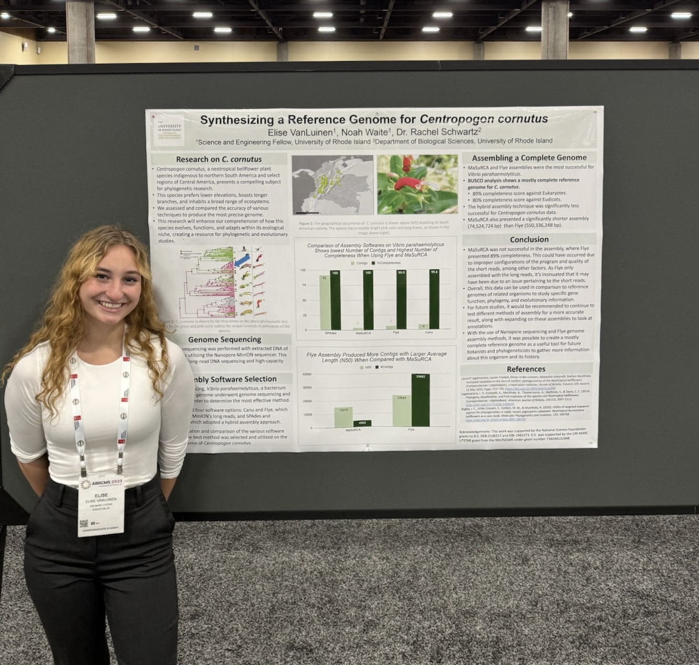
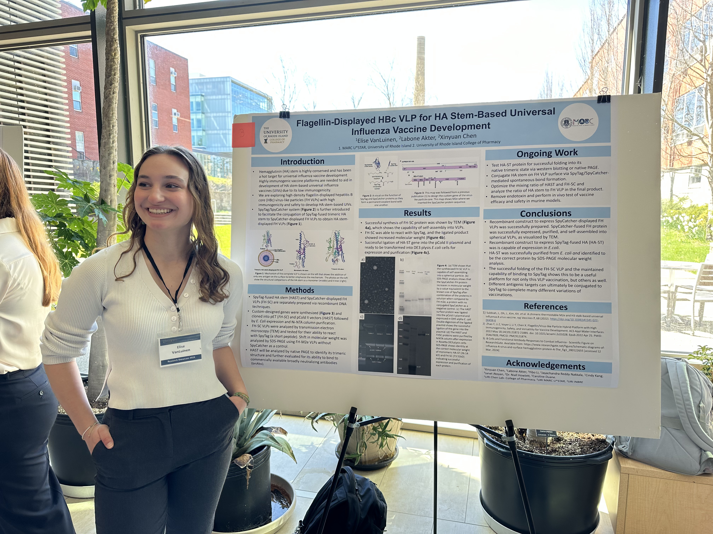

CELS Undergraduate Research Symposium, December 2023
VanLuinen, E., Waite, N., Schwartz, R. Synthesizing a reference genome for Centropogon cornutus. Poster presentation delivered at the URI CELS Undergraduate Research Symposium. Given December 2023.

Stanford Summer Research Symposium, August 2024
VanLuinen, E., Walton, S., Vila, J., Petrov, D., Good, B. Monitoring changes in the African rhinoceros (Diceros bicornis) microbiome in relation to translocation. Oral presentation delivered at Stanford summer research symposium. Given August 2024.

URI MARC U* STAR Annual Symposium, April 2024
VanLuinen, E. A summation of my research as a MARC U*STAR trainee.
Oral Presentation delivered at URI MARC U*STAR Annual Symposium. Given April 2024.

URI Undergraduate Research Fellows Symposium, July 2023
VanLuinen, E., Waite, N., Schwartz, R. Centropogon cornutus genome assembly and analysis. Oral presentation delivered at the URI Undergraduate Research Fellows Symposium. Given July 2023.

Annual Biomedical Conference for Minoritized Students (ABRCMS), November 2023
VanLuinen, E., Waite, N., Schwartz, R. Synthesizing a reference genome for Centropogon cornutus. Poster presentation delivered at the Annual Biomedical Research Conference for Minoritized Students (ABRCMS). Given November 2023.

URI College of Pharmacy Undergraduate Research Symposium, April 2024
VanLuinen, E., Akter, L., Li, Y., Chen, X. Flagellin-displayed HBc VLP for HA Stem-Based Universal Influenza Vaccine Development. Poster delivered at the URI College of Pharmacy Undergraduate Research symposium. Given April 2024.